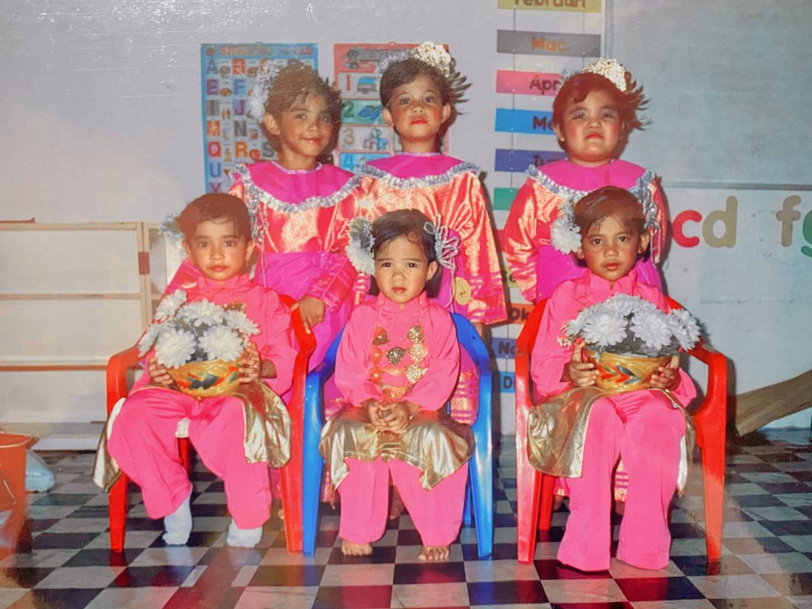
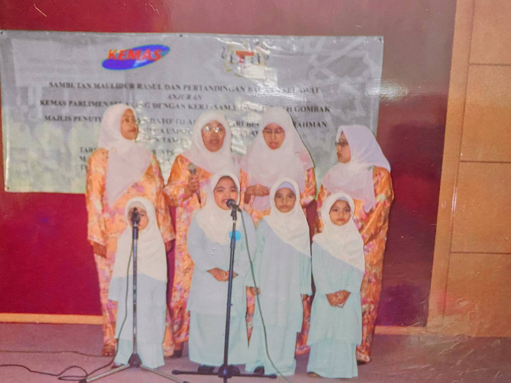
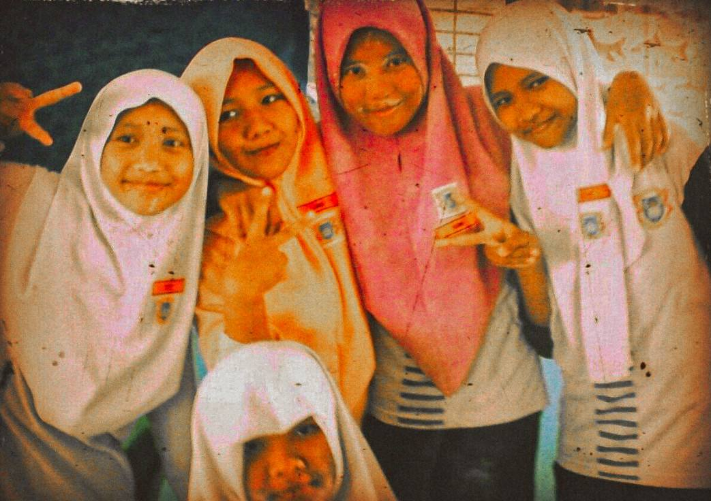
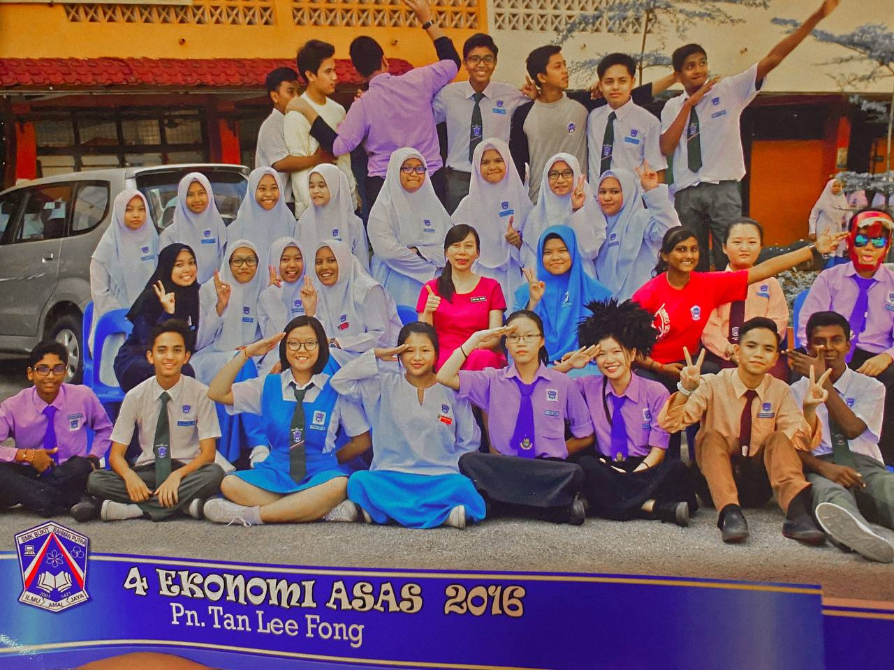

| My Experience throughout my childhood and adulthood |
| In 2005 I was 5 years old.
I went to school at the Tabika Kemas
in Kampung Gombak Kuang. The teacher had chosen me and my other friends to
enter the dancing competition between the other kindergartens. She had said
to my parents, I was chosen to dance because of my flexible and soft body to
dance. I felt very happy then because dancing was something that could calm me
down. Unfortunately I couldn’t continue my talent because I didn’t know where to
get my dance class. So, I just go through my day like other students in regular
school and don’t attend extra school like other kids like piano classes, gymnastics
classes and others. |
| 
In 2006, I was 6 years old. My kindergarten has also involved me and my other friends in nasyid for Maulidur Rasul.
My friend and I sang a nasyid song on stage. Although at first it was a bit embarrassing because I had no confidence in
front of the crowd. But my friend and I were able to do well due to encouragement from
our parents and our teachers. This is a really great experience for me and friend because
we can create an attitude of courage in ourselves. |
 In 2012, I was appointed
a Pengawas Rakan Sebaya (PRS). My experience throughout
the year was enormous. I need to help my friends as well as teachers no matter the time. I
still remember my memories and experiences that I had to help my teacher prepare some things
such as distributing papers in each class and help my teacher prepare the few things of the ceremony.
I really missed the atmosphere and the experience because I was able to guide my friends as well as
I was able to meet a lot of new friends. In 2012, I was appointed
a Pengawas Rakan Sebaya (PRS). My experience throughout
the year was enormous. I need to help my friends as well as teachers no matter the time. I
still remember my memories and experiences that I had to help my teacher prepare some things
such as distributing papers in each class and help my teacher prepare the few things of the ceremony.
I really missed the atmosphere and the experience because I was able to guide my friends as well as
I was able to meet a lot of new friends. |
| In 2012,
when I was 12 years old. I have been involved in volleyball matches
between classes. This match was held after we finished answering our UPSR. Even though I didn’t
win the entire match, I was still happy and proud of my experience. I was able to make a very
interesting serve and the opponents were unable to get the ball three times in a row. I
was happy at the time because I didn’t expect to be able to do a pretty good serve. Also, when
we were fighting, my friend and I also had a collision with each other which caused us to be dragged
on the ground because at that time we wanted to catch the ball so that it would not fall to the ground.
We are thankful that no injuries happened to us.
(This photo was taken after tournament as we could not bring the phone to school) |
| In 2016 I was in Form 4 which was
16 years old. I was appointed by the class teacher
to be the class leader. I was a bit surprised because that was the first time I was appointed to be the
class leader. The experience I went through that year was very interesting because I helped my teacher
like helping he/she pick up books, pick up and send attendance books in the discipline unit and others. Being
a class leader is not easy because I have to always keep my classmates in class and take care of their
behaviour. In fact, with me being a leader I get the experience of being responsible in charge of something
no matter what happens I need to be assertive and mentor my friends. With this I was able to cultivate
that trait until adulthood. |
 In 2017 I was also supposed
to be appointed as class leader but after I had a slow talk
with my class teacher. The position of class leader was changed to my male friend, and I just became an
assistant class leader. I had to do that because I wanted to focus on SPM and lessons and was afraid of
not being able to divide my time and lack of focus in class. So, I decided to take the position of assistant
class leader only. Despite only being an assistant class leader, the experience was also very interesting.
I always help my friend who is the class leader if he needs help. We also divided the work, such as if in
the morning he took the attendance file at the disciplinary unit, then when we going back home it was my
turn to send the attendance file back to the disciplinary unit. With this we were both able to cultivate
ourselves with the nature of tolerance and cooperation with each other. In 2017 I was also supposed
to be appointed as class leader but after I had a slow talk
with my class teacher. The position of class leader was changed to my male friend, and I just became an
assistant class leader. I had to do that because I wanted to focus on SPM and lessons and was afraid of
not being able to divide my time and lack of focus in class. So, I decided to take the position of assistant
class leader only. Despite only being an assistant class leader, the experience was also very interesting.
I always help my friend who is the class leader if he needs help. We also divided the work, such as if in
the morning he took the attendance file at the disciplinary unit, then when we going back home it was my
turn to send the attendance file back to the disciplinary unit. With this we were both able to cultivate
ourselves with the nature of tolerance and cooperation with each other. |